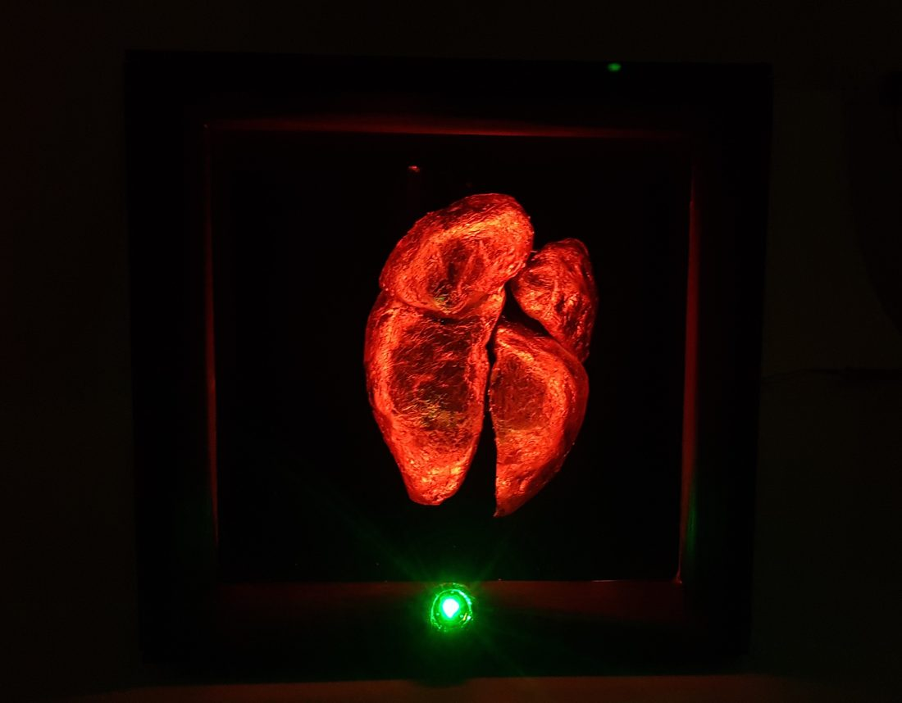
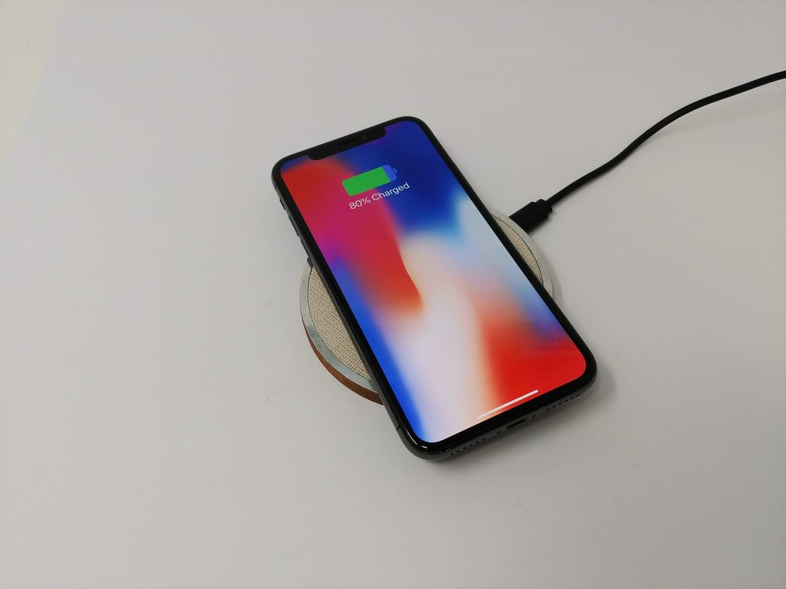
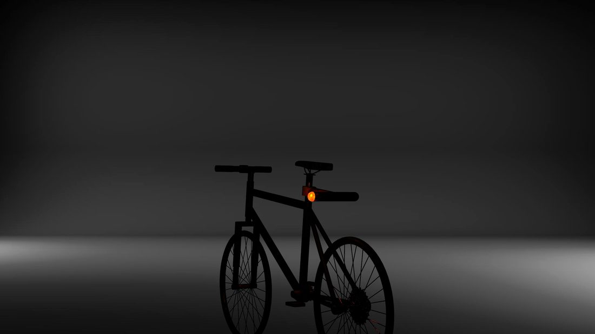
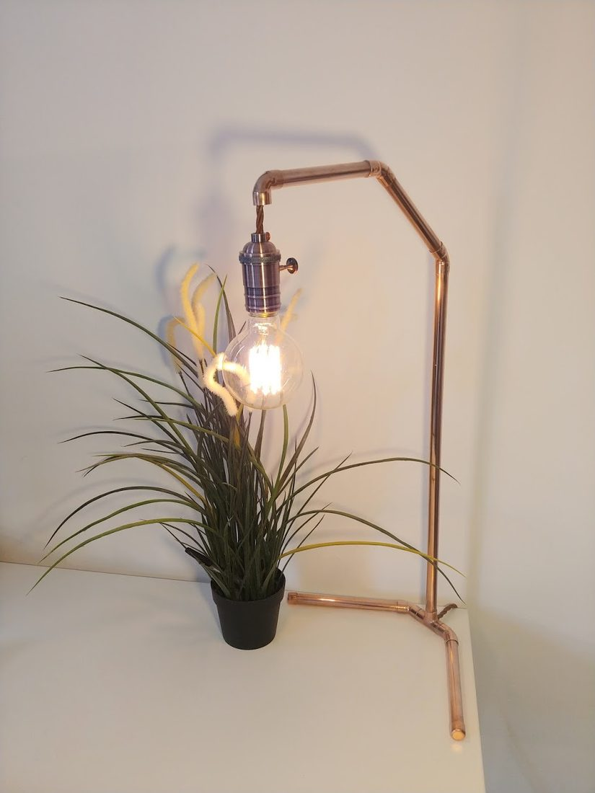
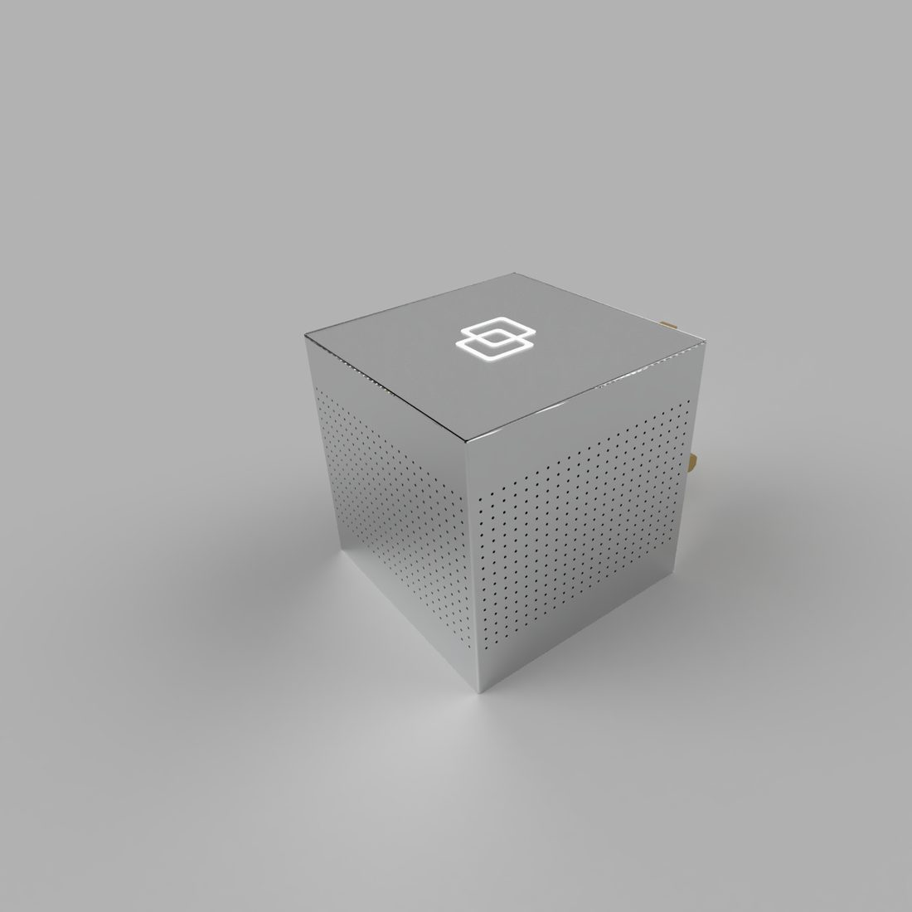
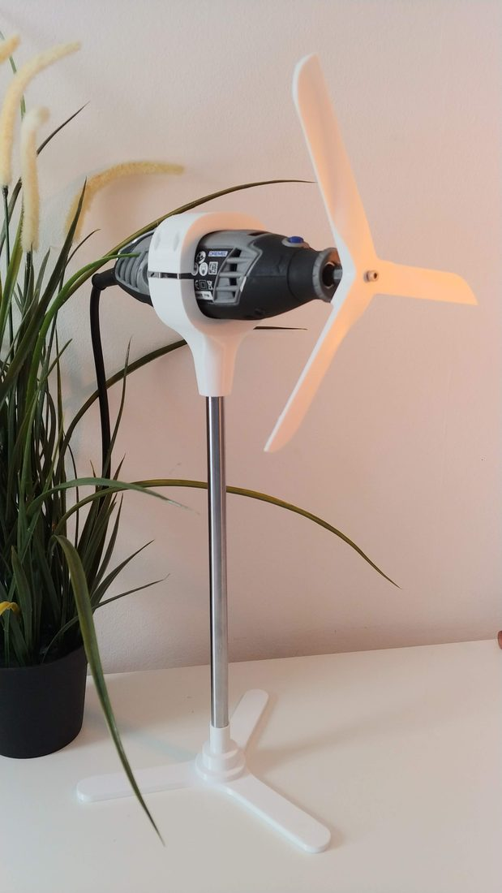

Physical products, from an energy IoT platform used in thousands of homes down to an evening spent turning a Dremel into a desk fan.
Physical AI for the home
Tewke is an energy IoT company I helped co-found in late 2020 to develop the next generation of home automation products that can control your whole home, from lighting and heating, to music and monitoring air quality, whilst also reducing energy bills by upto 30%.
Earlier work — university builds, personal projects, and the odd weekend experiment.

An interactive installation that syncs a mechatronic copper heart to your own pulse — Victorian mechanisms and V-twin engineering, wrapped in cams, springs and gears.

A Qi wireless charger machined from scrap mahogany, aluminium and linen — 6.95mm thin, and a natural-material answer to a market built from plastic.

Wireless bicycle indicators, built to make riding after dark a little safer and a lot more visible.

A filament desk lamp built from reclaimed copper piping, with a floor-mounted switch on a 4-metre braided cable.

A modular home speaker system that rides the home's own wiring instead of wireless — machined aluminium, tempered glass, near-zero latency.

A Dremel 3000 turned into a desk fan in one evening — 3D-printed parts engineered to print without any support structures.